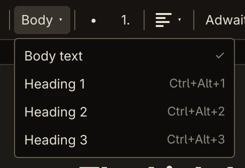
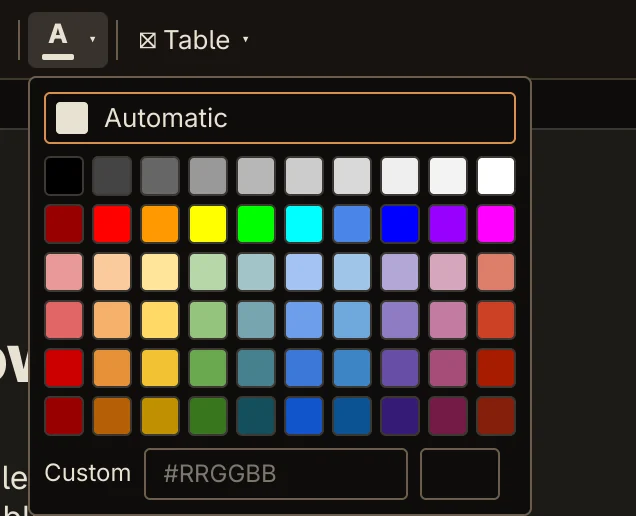
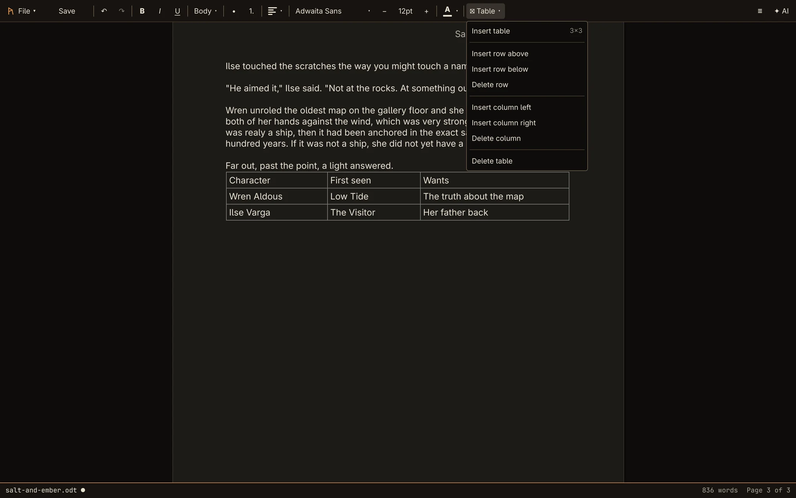

Guide
Writing and formatting
Everything on the toolbar, from bold to tables.
Each control works on the selection, or on the text you type next if nothing is selected. All of them are also in the command palette.
Bold, italic and underline
B, I and U, or Ctrl+B, Ctrl+I and Ctrl+U. A button is highlighted while that style is on at the cursor.
Paragraph styles and headings


The paragraph style button shows Body, H1, H2 or H3 for the paragraph you're in. Pick a style from its menu or use the shortcuts:
| Style | Shortcut |
|---|---|
| Body text | Ctrl+Alt+0 |
| Heading 1 | Ctrl+Alt+1 |
| Heading 2 | Ctrl+Alt+2 |
| Heading 3 | Ctrl+Alt+3 |
Pressing Return at the end of a heading starts body text, as in any word processor. Headings are real headings, saved as Heading 1–3 for Word and LibreOffice, and they make up the outline.
Lists
• starts a bullet list and 1. a numbered list. Click it again to turn the list back into plain paragraphs. In a list, Tab nests an item one level deeper and Shift+Tab moves it back out.
Alignment
The alignment menu offers Align left, Align center and Align right. Its icon shows the alignment of the paragraph you're in.
Not yet There is no justified alignment, and no paragraph spacing, indents or tab stop settings yet.
Font and size
The font button shows the current font, written in that font. Click it and type to search. Each name in the list is shown in its own typeface; pick one with the mouse or with ↑ ↓ and Return.
− and + step the size through 8, 10, 12, 14, 16, 18, 20, 24, 28, 32, 36 and 48 pt.
Text colour


The A button shows the current colour underneath. Its palette has Automatic, a grid of 60 colours, and Custom, where you type any #RRGGBB colour and press Return.
Automatic removes the colour you set, so the text is drawn in your theme's text colour.
Tables


⊞ Table → Insert table puts a 3×3 table at the cursor, the full width of the page. Then:
- Tab moves to the next cell, and in the last cell adds a new row. Shift+Tab moves back.
- The Table menu inserts rows above or below and columns left or right, and deletes the row, column or whole table. These are only available with the cursor in a table.
- Deleting rows or columns never removes the last one; use Delete table for that.
Each of these is one undo step. Tables work in the body of the document, not in headers and footers.